2016-10-20 - Nº 77

Editorial
Esta é a Newsletter Nº 77 que se apresenta com o mesmo formato que as anteriores. Se gostar da Newsletter partilhe-a!
Todas as Newsletters encontram-se indexadas no link.
Esta Newsletter tem os seguintes tópicos:
Faz precisamente hoje 12 anos que foi lançada a primeira versão do Ubuntu. Designada por Ubuntu 4.10 (Warty Warthog), foi anunciada pela Canonical e pelo fundador do Ubuntu Mark Shuttleworth. Faz hoje também anos que nasceu James Chadwick. É atribuída a este físico Inglês a descoberta em 1932 do neutrão. Ficou igualmente conhecido pelo seu contributo como responsável pela equipa Inglesa que trabalhou no projecto Manhattan durante a Segunda Guerra Mundial. Nas noticias da semana ficámos a saber que os carros Tesla que saírem da fábrica a partir de hoje irão incorporar todo o hardware para o funcionamento do sistema de condução autónoma. Ficámos também a saber, através da fundação recentemente criada, que o mini computador MicroBit irá ser vendido em todo o mundo. Este mini-computador foi distribuído por todas as escolas inglesas para os alunos de 11 e 12 anos para os motivar para a programação. Ficámos hoje a saber que a sonda Schiaparelli teve problemas na aterragem em Marte porque os propulsores destinados a retardar a descida funcionaram menos tempo do que o necessário. As notícias não são famosas e os responsáveis das agências envolvidas ainda não conseguiram contactar a sonda depois deste acontecimento. A Samsung vai lançar Chips de memória de 8GB LPDDR4 DRAM. A NEC anunciou uma colaboração com a Fundação Raspberry Pi para integrar nas suas TV o Raspberry PI computing module. O Primeiro Vídeo Jogo foi feito à 58 anos - tratava-se de um jogo de Ténis para duas pessoas que usava um écran de um osciloscópio analógico.
Na Newsletter desta semana apresentamos diversos projetos de maker assim como alguns modelos 3D que poderão ser úteis. Na rubrica "Documentação" apresentamos um livro sobre "Data Science" com Microsoft SQL Server 2016 e a MagPI edição especial de educação nº2.
 João Alves ([email protected])
João Alves ([email protected])
O conteúdo da Newsletter encontra-se sob a licença  Creative Commons Attribution-NonCommercial-ShareAlike 4.0 International License.
Creative Commons Attribution-NonCommercial-ShareAlike 4.0 International License.
Novidades da Semana ^
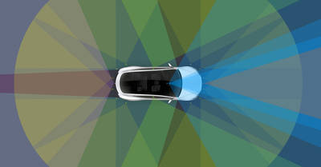
All Tesla Cars Being Produced Now Have Full Self-Driving Hardware
"Self-driving vehicles will play a crucial role in improving transportation safety and accelerating the worlds transition to a sustainable future. Full autonomy will enable a Tesla to be substantially safer than a human driver, lower the financial cost of transportation for those who own a car and provide low-cost on-demand mobility for those who do not. We are excited to announce that, as of today, all Tesla vehicles produced in our factory including Model 3 will have the hardware needed for full self-driving capability at a safety level substantially greater than that of a human driver. Eight surround cameras provide 360 degree visibility around the car at up to 250 meters of range. Twelve updated ultrasonic sensors complement this vision, allowing for detection of both hard and soft objects at nearly twice the distance of the prior system. A forward-facing radar with enhanced processing provides additional data about the world on a redundant wavelength, capable of seeing through heavy rain, fog, dust and even the car ahead." [...]
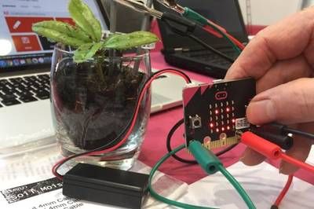
Micro Bit mini-computer heads overseas
"The Micro Bit mini-computer is to be sold across the world and enthusiasts are to be offered blueprints showing how to build their own versions. The announcements were made by a new non-profit foundation that is taking over the educational project, formerly led by the BBC. About one million of the devices were given away free to UK-based schoolchildren earlier this year. The BBC says they encourage children, especially girls, to code. However, the delayed rollout of the machines to last year's Year 7s (11-to-12-year-olds) caused problems for teachers who had less time than expected to prepare related classes." [...]
Crash landing feared as Europe's Mars lander still silent
"Thrusters intended to slow a European lander as it neared Mars on Wednesday fired for less time than expected before contact with the vehicle was lost, leaving scientists uncertain whether it touched down safely or broke apart. The Schiaparelli probe, part of a broader mission to search for evidence of life on the Red Planet, was to test technologies during the descent and on the surface for a rover scientists hope to send to Mars in 2020. Its descent marked only the second European attempt to land a craft on Mars, but it has shown no signs of life since it stopped transmitting around 50 seconds before Wednesday's planned touchdown." [...]
Outras Notícias
- NEC Display Solutions announces collaboration with Raspberry Pi
- The first video game released on this day, 58 years ago
- Motion-Sensing Device from STMicroelectronics Certified for Google Daydream and Tango, Supports Immersive Virtual and Augmented Reality on Android Mobile Devices
- STMicroelectronics Delivers Record Performance and Advanced Secure Services for the IoT with New STM32 Microcontroller Enhancements
- Samsung Rolls Out Industrys First 8GB LPDDR4 DRAM Package
- Jing Haipeng, Chen Dong to carry out China's Shenzhou-11 mission
Ciência e Tecnologia ^
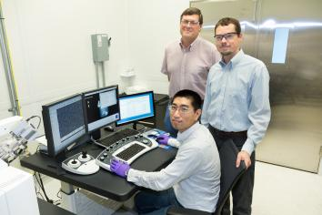
Nano-spike catalysts convert carbon dioxide directly into ethanol
"In a new twist to waste-to-fuel technology, scientists at the Department of Energys Oak Ridge National Laboratory have developed an electrochemical process that uses tiny spikes of carbon and copper to turn carbon dioxide, a greenhouse gas, into ethanol. Their finding, which involves nanofabrication and catalysis science, was serendipitous. " [...]
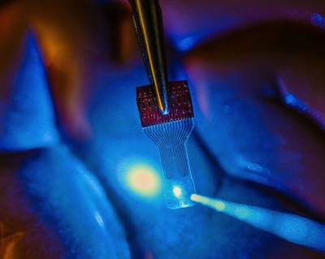
See-through sensors open new window into the brain
"Developing invisible implantable medical sensor arrays, a team of University of WisconsinMadison engineers has overcome a major technological hurdle in researchers efforts to understand the brain. The team described its technology, which has applications in fields ranging from neuroscience to cardiac care and even contact lenses, in the Oct. 20 issue of the online journal Nature Communications. Neural researchers study, monitor or stimulate the brain using imaging techniques in conjunction with implantable sensors that allow them to continuously capture and associate fleeting brain signals with the brain activity they can see. However, its difficult to see brain activity when there are sensors blocking the view." [...]
Bendable electronic paper shows full colour scale
"Less than a micrometre thin, flexible and giving all the colours that a regular LED display does, it still needs ten times less energy than a Kindle tablet. Researchers at Chalmers University of Technology have developed the basis for a new electronic paper. Their results were recently published in the high impact journal Advanced Materials. When Andreas Dahlin, Assistant Professor at Chalmers University of Technology, and his PhD student Kunli Xiong were working on placing conductive polymers on nanostructures they discovered that the combination would be perfectly suited to creating electronic displays as thin as paper. A year later the results were ready for publication. A material that is less than a micrometre thin, flexible and giving all the colours that a standard LED display does while needing ten times less energy than a Kindle tablet." [...]
Documentação ^
A documentação é parte essencial do processo de aprendizagem e a Internet além de artigos interessantes de explorar também tem alguma documentação em formato PDF interessante de ler. Todos os links aqui apresentados são para conteúdo disponibilizado livremente pelo editor do livro.
Data Science with Microsoft SQL Server 2016
"The world around usevery business and nearly every industryis being transformed by technology. SQL Server 2016 was built for this new world and to help businesses get ahead of todays disruptions. With this free ebook, learn to install, configure, and use Microsofts SQL Server R Services in data science projects. R is one of the most popular, powerful data analytics languages and environments in use by data scientists" [...]
The MagPI Special education issue 2
"This year, weve been working hard to improve the support we provide to our Raspberry Pi Certified Educators when they take their first steps post-Picademy, and begin to share their new skills with their students or faculty on their own. In the past, weve provided printable versions of our resources or handed out copies of The MagPi. Instead of providing these separately, we thought it would be fun to bundle them together for all to access." [...]
Modelos 3D ^
Com a disponibilidade de ferramentas que permitem dar azo a nossa imaginação na criação de peças 3D e espaços como o thingiverse para as publicar, esta rubrica apresenta alguns modelos selecionados que poderão ser úteis.
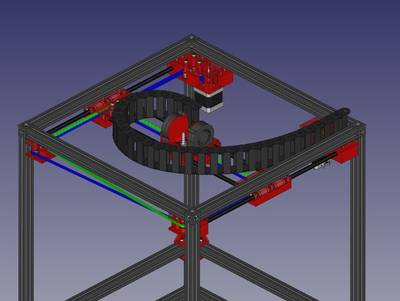
Fully Parametric Cable Chain
"As I did not find a cable chain suiting my needs, I decided to make my own. I was looking for a fully parametric cable chain, capable of output in CSG. The Cable Chains I found here were mostly only .stl Surfaces. Also I wanted to be able to build not only a single Chainlink, but a complete cable chain. Here you can specify a vector consisting of the angles towards the previous chain links. In future the will be an additional option to differing link types, to restrict angular movement of the chain. The Cable Chain is generated though a nested vector. There is a tupel consisting of the chain link type (at the moment there are only type 1: restricted to 45 movement and type 2: +-45 movement, type 3 generates a nice looking closed but mechanically not necessarily reasonable closed chain, type 4 onwards is just the same as type 3) and the angle of this link towards the previous. e.g. [1,30] is a link with a 30 angle." [...]
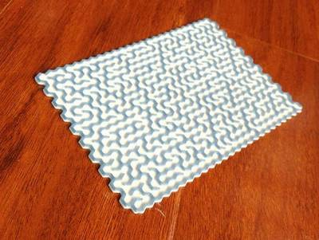
Hex maze generator
"This is a maze generator, implemented by pure OpenSCAD. It would generate a different maze every time." [...]
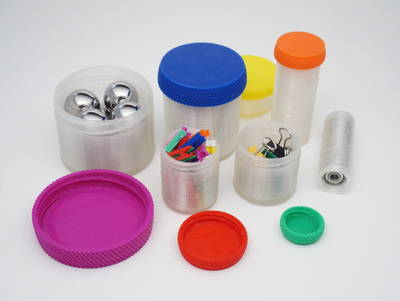
Customizable Container with Knurled Lid
"Containers are so useful - I got a lot of them. Here is my container with a knurled lid and cylindrical jar. Use the Customizer to create a proper container for your needs, it is fully parameterized. The User jonaslorander implemented a new option to divide the jar into compartments. Many thanks to him for providing the code and making it! I like it very much!" [...]
Projetos Maker ^
Diversos Projetos interessantes.
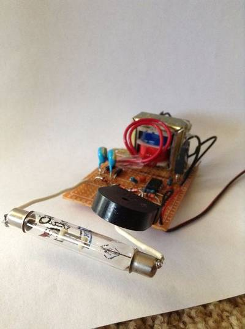
Simplest Geiger Counter
"Have you have ever wanted to test the radioactivity of your smoke alarm, or have you ever wanted to be extra prepared for that nuclear apocalypse that is always being spoken about? If you have, then this instructable is for you. In this instructable, I will show you how to build a very simple and cheap Geiger counter that can be built with salvaged parts and still get the job done. The video below will compliment this instructable with a verbal explanation of all the steps. " [...]
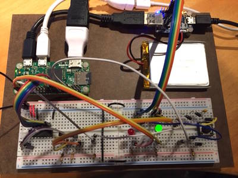
Power management for portable Raspberry Pi projects
"The Raspberry Pi is a low cost, single board computer with reasonable performance and relatively low power consumption, typically a version of the Linux operating system, often Raspbian. The Pi family of boards have turned out to be very useful machines for standalone and/or portable projects such as remote environment monitoring, cameras, etc. But to be truly portable, a system needs to include a power source and a way to control that power - such as a rechargeable battery, a charger, an on/off switch and some way to monitor battery status." [...]
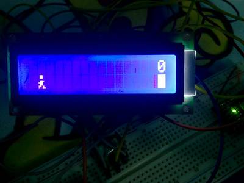
Arduino Game By LCD
"Making a great many things is very easy with Arduino microcontrollers. This hackster tells you how to create a simple video game" [...]
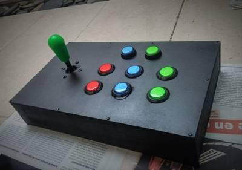
Arcade Control Arduino UNO
"This project will be a continuation or implement further from my previous project ( Potentiometer, Buttons and Arduino UNO as Joystick , read this instructable is key to understand how to work what then create and explain), where it was created and was used almost all of the potential UnoJoy gives us to create a control, since we will not use the two analog joysticks that control has a PS3, for example. We will create a retro control arcade, which is mechanically driven by 8 button and a lever, with box for mounting in its entirety and lights for buttons." [...]
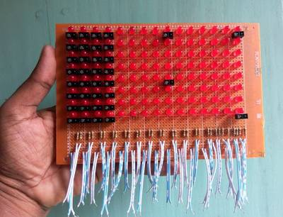
LED Writing Board for Kids
"Children like to play and usually dont like to study. But, it is very easy to teach them by some interesting stuffs. Learning by playing is the best way to teach them. From the thinking I made a LED writing board for the kids. LEDs are arranged in matrix form and anything can be written or drawn by dragging the finger above the board. Every LED of the board can be lit by finger. Just put or drag your finger into the LED, it will light up instantly. I made the board using 64 LEDs as a demo. It can be made by using more LEDs for professional use." [...]
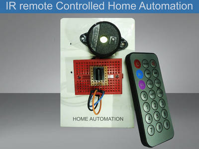
IR Remote Controlled Home Automation
"Today in this instructable we are going to make something really useful and very cool thing a IR Remote Controlled Home Automation System. The reason i come up with this idea is, i hate to turn on and off my switches in my garage. Because the switch board is little far away from my work bench, So every time to turn on or off my light or something i really need to stand up and go to switch board . It is a horrible problem when i working with something in my garage. So i decided to find a way to solve my problem . I come up with a home automation device. The best way is to use a IR remote to control through this, i can control multiple devices. The work bench and switch board is approximately about 3 meter away so it will work fine. Using this device you can also control any home appliances like TV, Fan, Lights etc...." [...]
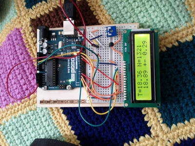
Simple Data Statistics (Temperature)
"Arduino collects and calculates basic statistics on the acquired temperature data: average, standard deviation, min and max." [...]
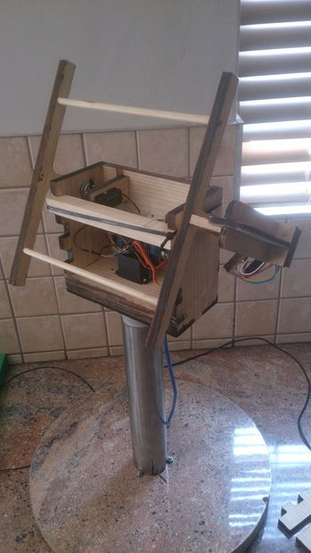
Arduino-controlled Dual Axis Solar tracker
"I had to build and program a solar tracker for my BTech project. I got most parts laser cut out of wood from a drawing I made in Solidworks." [...]
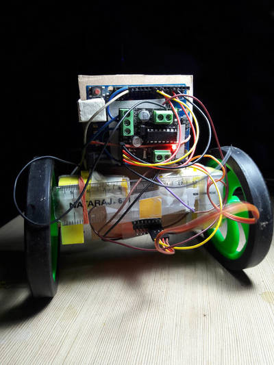
Two Wheel Balanced Robot_PID
"Two-Wheel Self Balancing Robot using Arduino and MPU6050 . Well guys I know its not a new type invention but still many hobbyist still love to see the electronics. I will go here with the cheap parts in order to keep minimum cost for all those young inventors who want to complete this instructable !! Savvy !!" [...]
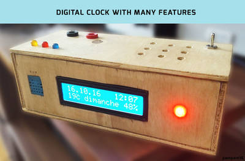
Digital Clock With Many Features
"This is my first attempt to do a DIY. I did this project during the summer and decided to share it with you guys. I hope you enjoy doing it as much as I did :) For this project I assume that you have some very basics in electronics ( like you know how to use a soldering iron and you know what a resistance is). Formalities done, let's talk about this awesome digital clock." [...]
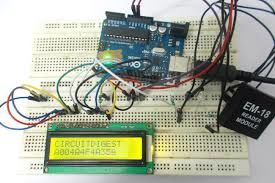
RFID INTERFACING WITH ARDUINO
"In this tutorial we are going to design a system to read the ID of RFID cards. RFID stands for Radio Frequency Identification. Each card has a unique ID embedded in it. These systems have many applications, like in offices, shopping malls and in many other places where only the person with authorization card is allowed to enter in the room. RFID is used in shopping malls to stop a theft from happening, here the product will be tagged with RFID chip and when a person leaves a building with the RFID chip an alarm is raised automatically and so the theft is stopped. The RFID tag is designed as small as grain of sand. The RFID authentication systems are easy to design and are cheap in cost. Some schools and colleges nowadays use RFID as attendance register." [...]
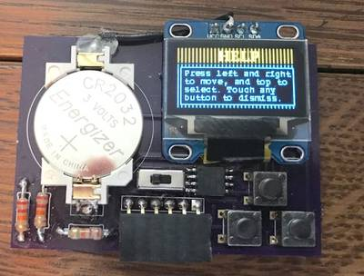
Business Card/Game Console: ATtiny85 and OLED Screen
"Today I'm going to show you how you can build your own business card/game console/whatever you can imagine that features a backlit I2C OLED display and an ATtiny85 Microprocessor. In this Instructable I'll tell you how a PCB that I designed actually functions, how you can build it, and what you can do with this functionality. If you already have an I2C screen hooked up to an ATtiny85, this Instructable can still be helpful if you're trying to get images to display or want to make menus, a game, and more. You're probably wondering what this thing actually is. It's just a simple printed circuit board with an onboard battery, screen, buttons, on/off switch, and processing unit. Think of it as a tiny Gameboy, that you can easily program to do a variety of things. Onward!" [...]
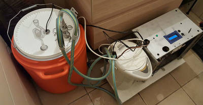
Dr. Fermentor V9 - Cooling and Heating Fermentation by an Arduino Controller
"I built a system to control the fermentation temperature of my brew (beer, wine, whisky) by circulating hot or cold water through the fermentation vessel by means of a heat exchanger (a stainless steel wort chiller) which is located inside the fermentation vessel. The temperature is controlled by an Arduino controller, which controls (1) the heating elements of an electric kettle (2) a compressor's cooling coils that were retrofitted into the electric kettle and (3) a pump also located inside the kettle. Digital thermometers signal the arduino which activates the kettle, compressor and pump via a Relay Switch therefore allowing for full temperature control of your fermentor. The aim was to build a system that can control the temperature on a large fermentor that will not fit inside a refrigerator. Here, I demonstrate fermentation with a standard 23 liter plastic bucket fermenter but I plan to use my 70 liter brew pot in the future as the fermentor (the wort chiller will be retrofitted into the lid and silicon tubing will be used as a gasket clamped down with locking pliers)." [...]
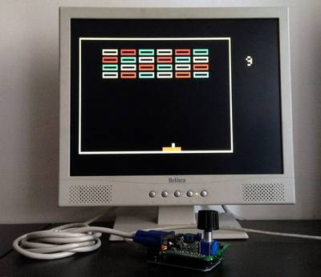
VGA Breakout with Arduino Uno
"I have reproduced another classical game of the old school. This is the time of Breakout! The output runs on a VGA monitor, by means of a bare Arduino Uno and few other components. As usual, the goal is to avoid any special shield or supporting IC. The only needed components are one button, a potenziometer, few resistors and a DSUB15 connector." [...]
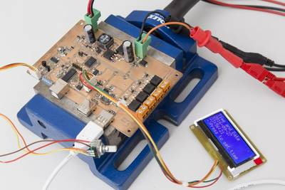
MPPT solar charger tester
"One of my main goals with this design is to archieve very low standby current, somewhere in the tens of microamps. The basis for this is a low-power buck on the basis of a Texas TPS62120 where the microcontroller can switch the output voltage between 2.2 and 3.3 volts nominally. This works as intended. With no load and the output voltage low, the supply consumes 12.9 microamps at 12V input voltage. With the high output voltage the idle current goes up to 14.3uA. Quite a bit of that current is due to the voltage divider that sets the output voltage. The regulator itself consumes about 9uA in both cases." [...]
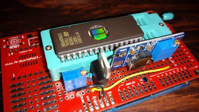
Arduino Mega Eprom Programmer
"Recently I acquired a SNES. But it only came with a bootleg Mortal Kombat cartridge. Searching for games I found a lot of repro cartridges (Cartridges with the ROM swapped) being sold at local second hand selling websites. The problem is that they are sold usually at prices comparing to those of original untouched cartridges. People should not overprice something they are stealing anyway. So what? I made this post to prove anyone with an Arduino Mega and some spare components can burn a EPROM for cheap." [...]
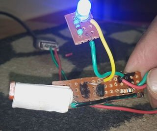
Automatic Dark Detector
"I made a project on this platform and It's not that much effective. So this project is all about the some minor upgrade to increase the effectiveness. If you are following me then you know that what I am talking about. Or If you seen my projects for the first time then just stick with this project." [...]
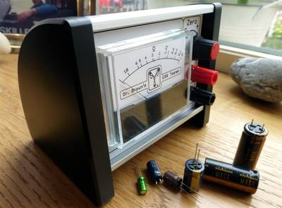
Dr Brown's Capacitor ESR Tester
" I finally got round to making my capacitor ESR tester this week after finding a nice simple 5 transistor version by EEVBlog member Jay_Diddy_B. Unfortunately, for me, the design was only SMD so, I decided to replicate his schematic in Eagle PCB using a through hole component design. I will not be going into much detail regarding ESR or Equivalent Series Resistance Meters as, there is already plenty of other sources of information on the subject. Yet, every tinkering knows capacitors are guilty of a lot of sins in electronics. Capacitors love to throw red herrings! They can appear physically fine (no bulge), show good capacitance and hide in circuit, standing to attention like the Queens Guards hiding shorts and high resistance under their big hats. This is where the ESR tester can be a saviour, with the ability to test for "out of specification" high resistance, within the capacitor. They can also be used to test "in circuit", without the need to remove every capacitor in the circuit." [...]
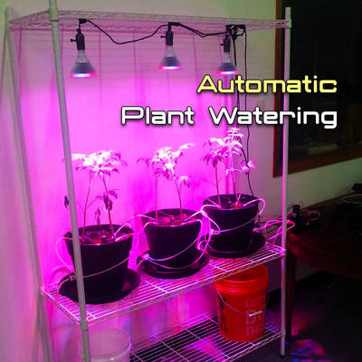
Automatic Plant Watering System with Arduino
"Have trouble remembering to water those tomatoes? Want to go on vacation but fear the worst for your container garden if you do? Fear no more with an automatic plant watering system! With a little bit of preparation and arduino on your side, you can make a system that will make sure your plants are watered right, giving you freedom to tend to whatever you need to while still producing those healthy tomatoes." [...]
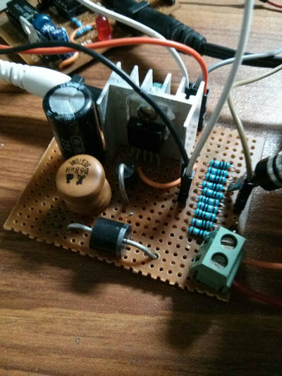
Improving and Porting the PID Controlled Current Source Design Over to an ATtiny85
"So apparently the PID regulated current source using a switching regulator is a pretty popular thing, something that is searched for online quite often, at least that is what the blog stats indicate. In this post I will be taking things one step further, I will be discussing how and why I have ported the design to an ATtiny85 and most importantly the improvements I have made to minimize the steady state error to an almost zero. In case you have been following I would recommend you to go through the two article I have earlier leading up to this." [...]
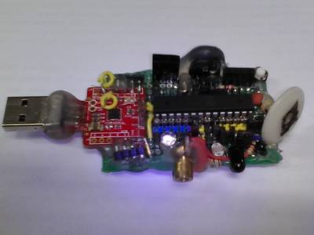
CyDuino : An Arduino Dev Board with Lots of Goodies
"We (most of us) really like Arduino because it's possible to make cheap clones, lots of libraries, examples, forum support and community out there. Outside Arduino world, I like Cypress PSoC for some of its cool features like Graphical IDE, APIs, great features and understandable documentation. I have bunch of PSoC 4 CY8CKIT-049 4xxx Prototyping Kits. The first half of this kit has CY7C65211 device, which is by default a programmable USB-UART serial bridge. I was thinking, maybe I can turn this part into a Arduino Porgrammer. Bingo ! It worked, with a little bit of hack and a Uno Bootloader Atmega328P. Arduino i.e. Atmegaxxx with Arduino Bootloader requires Rx, Tx data lines and DTR control line for uploading sketch." [...]
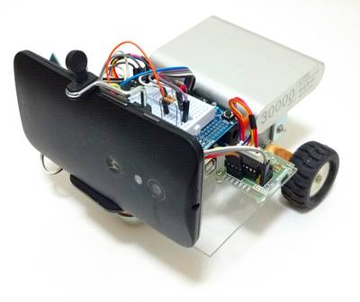
Wi-fi Controlled FPV Rover Robot (with Arduino and ESP8266)
"This tutorial shows how to design a remotely controlled two-wheeled robotic rover over a wi-fi network, using an Arduino Uno connected to an ESP8266 Wi-fi module and two stepper motors. The robot can be controlled from an ordinary internet browser, using a HTML designed interface. An Android smartphone is used to broadcast video and audio from the robot to operator's control interface. There is a lot of robotic kits available online with various shapes, dimensions and prices. But, depending on your application, none of them will fit, and you might find out they are too expensive for your experiments. Or maybe you just want to make your your mechanical structure instead of buying a complete one.This tutorial also shows how to design and build a low-cost acrylic frame for your own robotic project, using just ordinary tools for those who doesn't have access to those expensive 3D printers or laser cutters. A simple robotic platform is presented." [...]
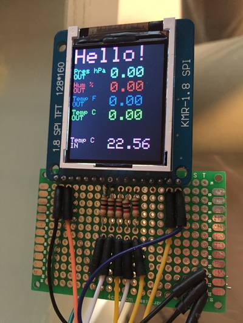
Weather station v1.3 with RF transmission
"A project for small Weather Station with a central HUB for Home and an external part." [...]
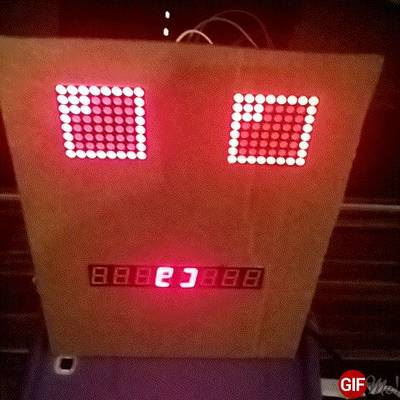
LED Halloween Face
"Halloween is just around the corner, why not make a fun led face to spook your visitors! This is a simple project that looks really cool at night. So lets get started!" [...]
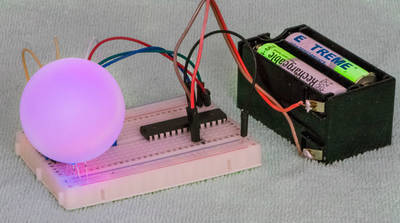
All the colours of the RainboW but no RBG LED in sight . . .
"This project came about when i wanted to create a pulsing night/mood light that randomly decides on a colour and then gently lights up and then down again. The problem was that i had no RGB LED and the one i had ordered from China had not turned up and got lost in the post :(. After some time I remembered the old television pixels and thought maybe i can do this with 3 normal LED's in stead. So off i when to scavenge for LEDs . . . The project consists of 3 normal LED's, a micro controller (the awesome ATMega328p) on a breadboard, some batteries, a pingpong ball as a diffuser and in order to control the luminosity 3 variable resistors. This togheter with the code enabled me to create a very nice night light for bed time. The difference with this one is that its not very bright, which is what i wanted as most of them are quite bright and in my opinion way to bright for night lights." [...]
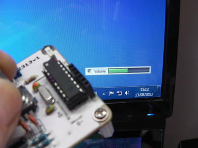
AVR: Attiny 2313 & Attiny84 V-USB Media Volume Control
"My most rewarding projects are the ones which i actually use. I like my audio gear so, this was the perfect companion project! On my desk i have a headphone amplifier for my AKG K702's headphones, below it i have my self built Onixia integrated amplifier for my bookshelf speakers. I have been thinking about making a global volume control for both devices for quite some time... here is the results of my efforts." [...]
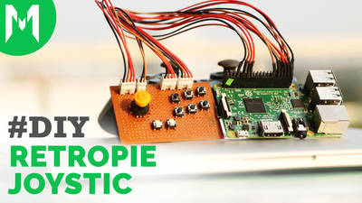
Make Joystic for Retropie
"Here is my requirement. I wanted to build a handheld arcade machine using retropie. If you want to add your own controls like the sanwa joystick or buttons then there are two possible solutions given all over the internet. One is using the ControlBlock from Retropie and the other is using iPac. Both these solutions cost around $40 which is the first problem. The second problem is that this solution adds another component to my build which increases in space. And space is something I dont have. I want the handheld game to be as compact as possible. So I have decided to use the GPIO pins and build my custom joystick. Here it is. Stick around while I show you how I made this." [...]
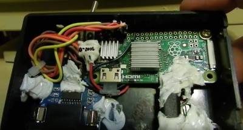
The VT510 & The RasPi Zero, Part II
"Finally done. The Pi Zero with the 2GB MicroSD card has become the brains for the VT510 at last! its messy, but its the best I can do until I can find the pinout to the ROM expansion port on the back of the VT510 and figure out if thatd be a viable connection path to go with in the future." [...]
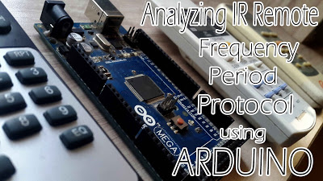
Analyze any IR protocol with just you Arduino board
"Recently, I was in deep research on how to make our own Self Learning Universal Remote. So when I searched for the procedure of making this, first step I found is analyzing IR protocol,its frequency (time period),and also the combination of High and Low pulse for making a particular carrier frequency. And for measuring all these parameters, all the people either used DSO or some other hardware and software analyzer. But I didnt have any hardware or software for protocol analyzing except my Arduino MEGA board. Yeah!!!, now you can measure all the parameters of IR remote by your Arduino board only." [...]
That's all Folks!